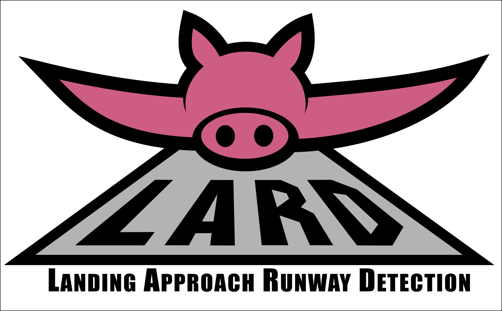

Welcome to Lard’s documentation!
{kind=link}
This documentation contains the prototypes and technical descriptions of the python code realized for dataset generation and export.
For information about its usage, please refer instead to the Readme.md file in the project root directory.
Technical documentation
Documentation generation and update
How to modify or generate new documentations (here using Sphinx in the Pycharm IDE):
Installation :
Ensure that
Insert documentation comment stubis selected inEditor | General | Smart Keys.In
Smart Keys | Python, checkInsert type placeholders in the documentation comment stubIn
Tools | Python Integrated Tools, ensuresDocstring formatisrestructuredInstall sphinx :
pip install sphinx pip install sphinx-rtd-theme
To modify/rebuild the documentation :
In
./docs, run in the terminal :
sphinx-apidoc --module-first -o ./source ..In Edit Configuration : create sphinx task, input is
docs/source, ouput isdocs/build, working directory isdocs/sourceRun the previously created task when you have finished to modify the documentation strings in the project source code.